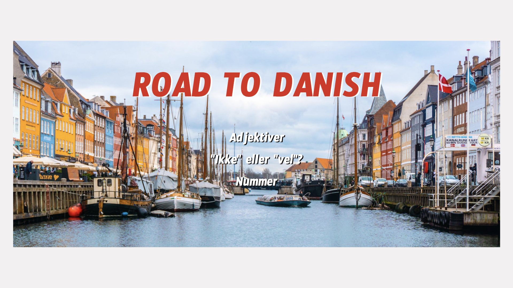
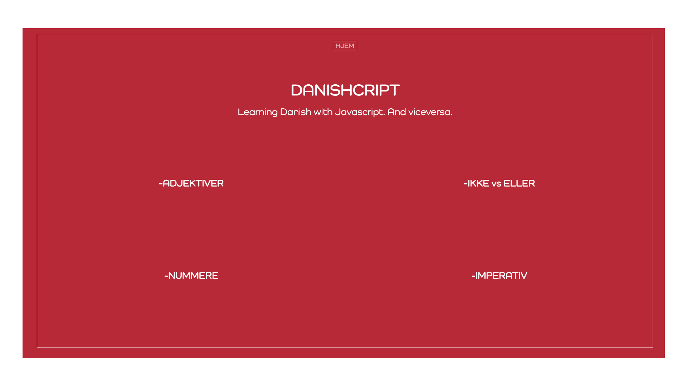
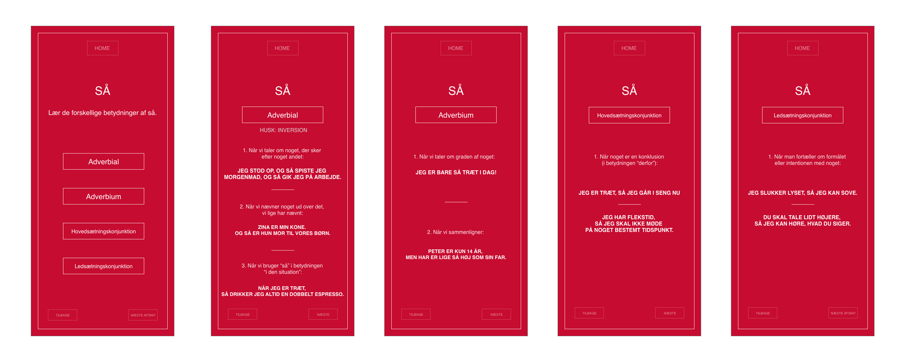
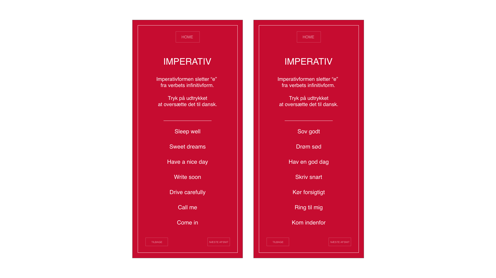
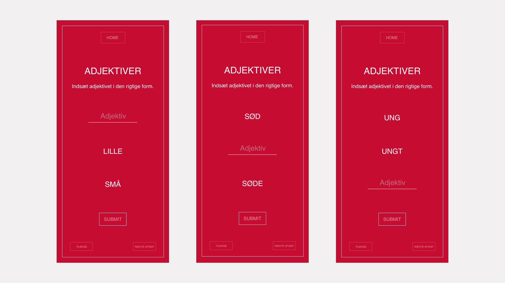

DANISHCRIPT
ORIGIN
I had the brilliant idea of starting learning both Danish and JavaScript at the same time. This project helped me to not fall behind with neither of them.
FIRST ITERATION
My first approach involved a background image of Nyhavn that looked nice but took too long to load.
PROCESS
I then decided to go with a minimalistic style, using the colors of the danish flag.
CATEGORIES
Each category is based on a danish lesson and has its own logic.
  You can see the final product here.